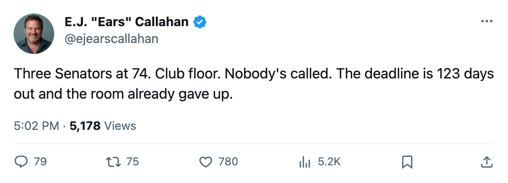
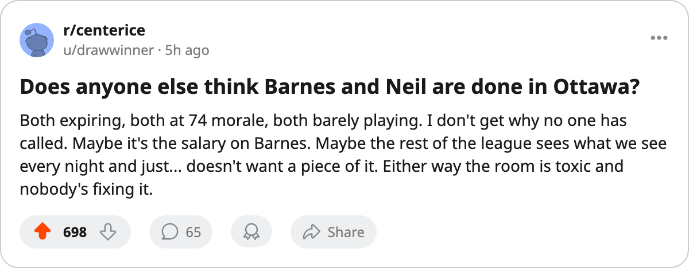

Ottawa Reads 86.8, the League Floor. Their Most Expensive Man Has 12 Points. The Name Filed This Week Is Already on IR.
Three Senators sit at 74 on the Bureau's Morale Scale. The room is the worst in hockey, and the front office just filed a contract that landed the man on the injured list before day four.
 E.J. "Ears" CallahanInsider · The Hot Stove
E.J. "Ears" CallahanInsider · The Hot Stove

Two expiring Senators at 74 morale are trade bait nobody has bitten. Deadline is 123 days away.

 Bryan Marchment72 was filed to
Bryan Marchment72 was filed to  Ottawa Senators on November 12 at $642,190. He is on the injured list with an arm, out until November 18. He had played 11 games for Ottawa before the paperwork cleared, carrying 9.3 minutes a night and a morale rating of 74, the fourth-lowest on the Bureau's Morale Scale and tied with 8 other men across the league.
Ottawa Senators on November 12 at $642,190. He is on the injured list with an arm, out until November 18. He had played 11 games for Ottawa before the paperwork cleared, carrying 9.3 minutes a night and a morale rating of 74, the fourth-lowest on the Bureau's Morale Scale and tied with 8 other men across the league.
The room reads 86.8 as a club average, the lowest in the league.  Buffalo Sabres is next at 87.0,
Buffalo Sabres is next at 87.0,  Carolina Hurricanes at 87.4.
Carolina Hurricanes at 87.4.
Three Senators occupy the bottom 15:
| Player | Pos | Morale | GP | MPG | Contract Years Left |
|---|---|---|---|---|---|
| Bryan Marchment | D | 74 | 11 | 9.3 | 2 |
 Stu Barnes74 Stu Barnes74 | C | 74 | 14 | 9.6 | 0 |
| Chris Neil64 | RW | 74 | 2 | 5.5 | 0 |
The $11.40M question
 Daniel Alfredsson89 carries the largest salary in the entire contract-year class at $11.40M. He has 12 points in 14 games at 91 overall. His winger
Daniel Alfredsson89 carries the largest salary in the entire contract-year class at $11.40M. He has 12 points in 14 games at 91 overall. His winger  Marian Hossa84, 26 years old, has 14 points in 14 games at 86 on $2.30M. Both are in the final year. Alfredsson is 32.
Marian Hossa84, 26 years old, has 14 points in 14 games at 86 on $2.30M. Both are in the final year. Alfredsson is 32.
Ottawa's cost per point reads $5.39M, second-worst in the league behind  Phoenix Coyotes at $6.16M. The Senators have 11 points in 14 games, a 5-8-1 record, and a 2-5 mark on the road. Their top defenseman,
Phoenix Coyotes at $6.16M. The Senators have 11 points in 14 games, a 5-8-1 record, and a 2-5 mark on the road. Their top defenseman,  Wade Redden79, 83 in the Book, is out with an elbow until December 22.
Wade Redden79, 83 in the Book, is out with an elbow until December 22.
Two names, no years left, no calls
Barnes and Neil are both in the final year of their deals. Barnes logs 9.6 minutes a night in 14 appearances; Neil has played 2 games at 5.5 minutes. Neither is producing enough to justify $2.80M or $0.60M at 74 morale. The trade deadline the calendar has as March 19 sits 123 days away.
League sources say the phone has not rung in Ottawa about any of the three at 74. In a normal November, two unhappy veterans on expiring deals with a sub-.500 club draw calls from playoff teams looking for a fourth-liner. Here, nobody is reaching Sunrise.
The Marchment contract is the 9th name filed by any club between November 10 and 12. Eight of those nine are on the injured list as of today. The pattern the desk has tracked since October holds at Ottawa, but this reads differently from a payroll dump or a cap dance. With no runway, bodies go under contract in a room that already hates it there.
The Senators' payroll reads $59.27M against $38.99M in revenue, yielding $21.25M in profit. The money works. The building works. Attendance runs 14,427 a night at $82 a ticket. The prestige sits at 803 and zero Cups. None of that explains why four of the 15 unhappiest men in hockey wear the same sweater, two of them for nothing.
Confirmed vs. denied
The only confirmed news in this window is a trade between COL and DET (reported November 9). Nothing new has been logged for Ottawa. No deal, no waiver claim, no loan. The three at 74 remain under contract and miserable.

